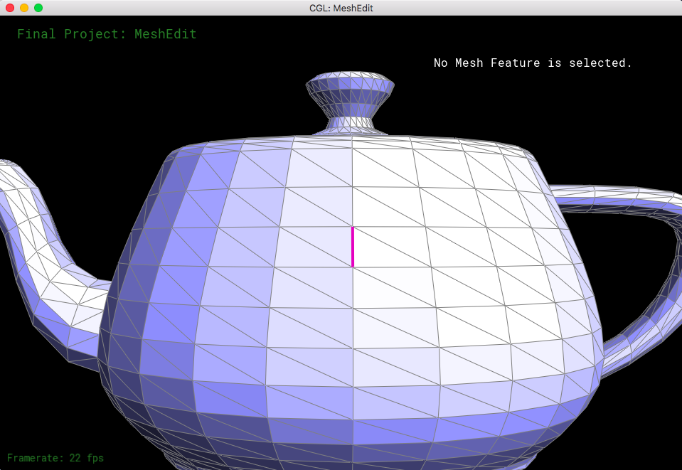
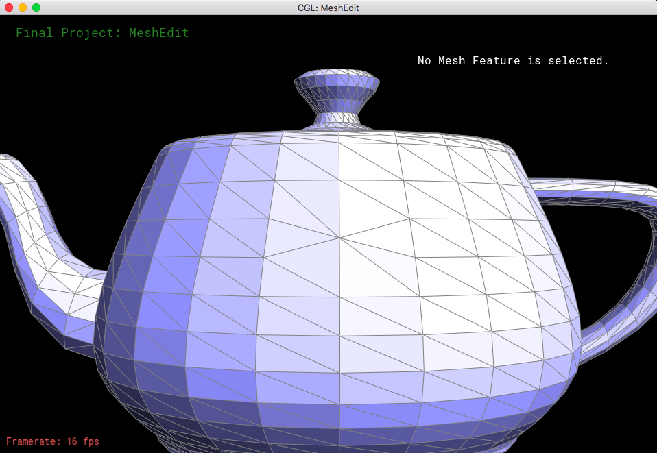
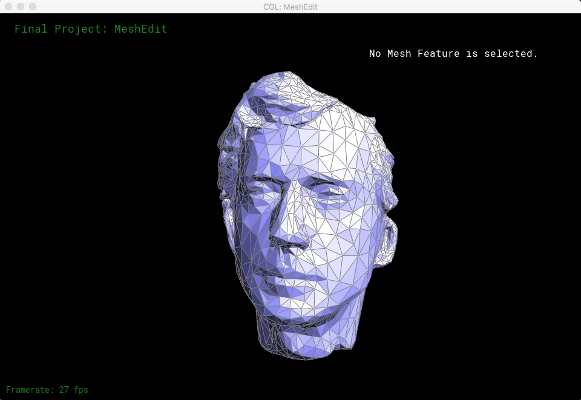
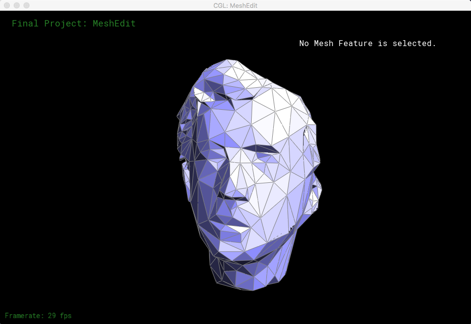
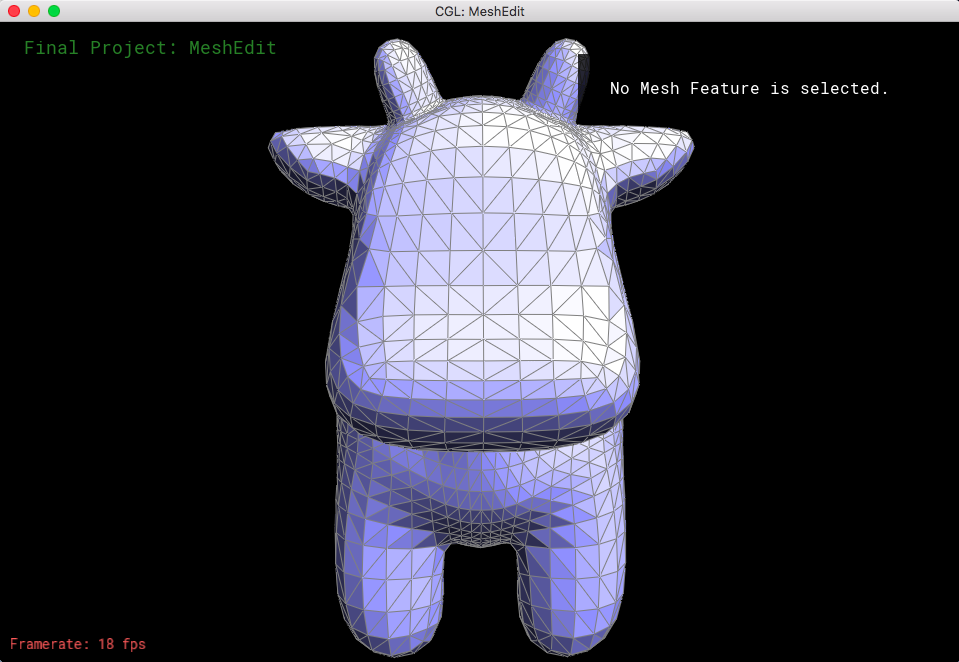
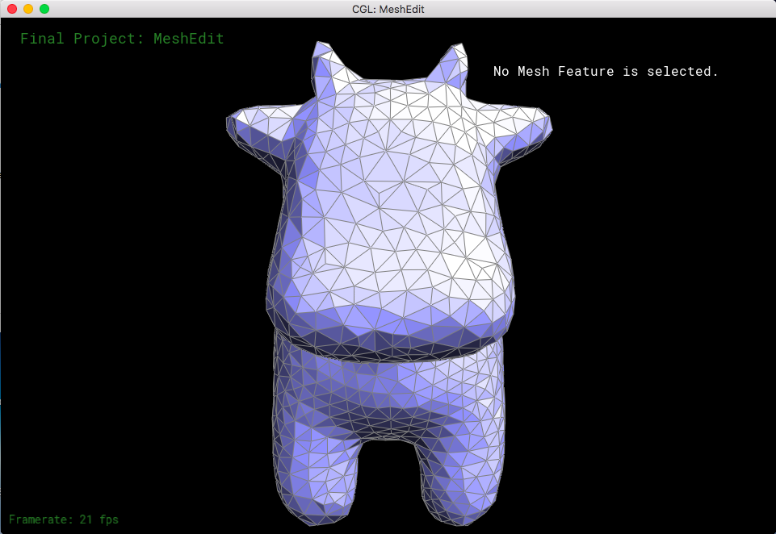

|
|
|
Over the past three weeks, we were able to develop a couple of functions for our extension of Meshedit. These functions allowed us to properly implement mesh downsampling, as well as give us a head start on various remeshing algorithms. Most of our time was invested on collapseEdge() throughout these past weeks; all three of us had to work on the function in order for it to work as a separate function, as well as a helper function for both mesh downsampling and isotropic remeshing. We also implemented a naive method for vertex deletion, and other helper functions to find incident edges, reduce valence, and compute new centroid positions of vertices.
We are confident to say that we have completed the implementation of mesh simplification using the Quadric Simplification Algorithm, and we currently have a basic process of using isotropic remeshing to remesh an object.
Here are some preliminary results of certain functions we implemented:
|   |
Above is the result of collapsing the highlighted edge in teapot.dae.
|
|
|   |
Above is the result of downsampling cow.dae.
|   |
Above is the result of remeshing cow.dae.
According to the project plan, we are quite on track. However, while working on the downsampling methods, we decided not to implement the vertex clustering algorithm because we realized it was significantly less efficient in terms of the data we needed to store (our planned structure to keep track of the vertices was going to be an oct-tree). We may need some reworking on our isotropic remeshing algorithm because we believe it is not fully refined. This would be the only update to the work plan we have created in the document, so we believe that we are right on track with our last algorithm, adaptive remeshing, to possibly be completed before our final deadline.